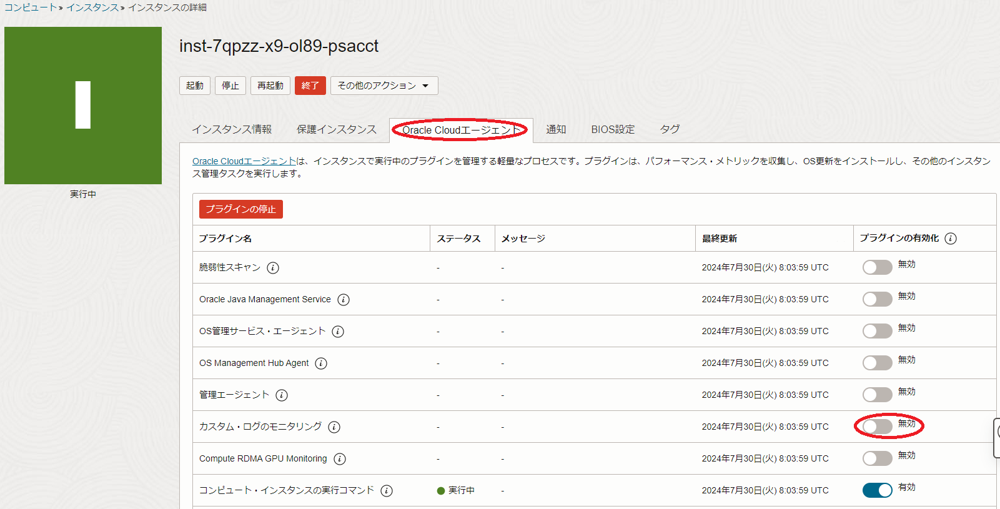

0. 概要
HPCワークロードの高並列実行に於けるスケーラビリティは、いわゆるOSジッターの影響を受けるため、不要なOS常駐サービスを停止することで、これを改善できる場合があります。
ただこの場合、停止しようとするサービスは、以下の観点で事前に精査する必要があります。
- 使用するリソースがどの程度か
- 提供する機能が不要かどうか
これらの調査を経て停止するサービスを特定したら、対象のサービスを停止し、HPCワークロードを実行します。
本テクニカルTipsは、HPCワークロード向けベアメタルシェイプ BM.Optimized3.36 と Oracle Linux 8ベースの HPCクラスタネットワーキングイメージ （※1）を使用するインスタンスを クラスタ・ネットワーク と共にデプロイするHPCクラスタを想定し、この計算ノードとしてのインスタンス上で不要サービスを停止することで、高並列時のスケーラビリティ向上を目的とするOSレベルのパフォーマンスチューニングを適用する方法を解説します。
※1）OCI HPCテクニカルTips集 の クラスタネットワーキングイメージの選び方 の 1. クラスタネットワーキングイメージ一覧 のイメージ No.1 です。
以降の章は、本チューニングの趣旨に沿って以下の順に解説します。
- 調査用HPCクラスタ構築
- 不要サービス特定
- 不要サービス停止
- 不要サービス停止による効果確認
- プロダクション用HPCクラスタ構築
不要サービスの特定は、Linuxのプロセスアカウンティングを利用し、インスタンスデプロイ直後のワークロードを実行していない状態でCPUを使用しているプロセスを特定、このプロセスが提供する機能を考慮して不要サービスかどうかを判断、不要と判断したサービスを停止します。
また不要サービスを停止した後、再度プロセスアカウンティング情報を取得し、その効果を確認します。
自身の利用するHPCクラスタが本テクニカルTipsの想定と同じシェイプ・OSの場合は、本テクニカルTipsと同じサービスを停止するだけでチューニングを適用することが出来るため、1章、2章、及び4章は参照にとどめて3章と5章の手順を適用します。
これらが想定と異なる場合は、1章の手順から順次チューニングを進めます。
この場合は、対象となる不要サービスが本テクニカルTipsと異なる可能性があるため、自身で特定した不要サービスに合わせた停止方法を適用します。
1. 調査用HPCクラスタ構築
本章は、 BM.Optimized3.36 と Oracle Linux 8ベースの HPCクラスタネットワーキングイメージ （※1）でデプロイする2ノードの計算ノードを クラスタ・ネットワーク で接続する、不要サービスの特定とその効果確認に使用する調査用HPCクラスタを構築します。
※1）OCI HPCテクニカルTips集 の クラスタネットワーキングイメージの選び方 の 1. クラスタネットワーキングイメージ一覧 のイメージ No.1 です。
この構築手順は、 OCI HPCチュートリアル集 の HPCクラスタを構築する(基礎インフラ手動構築編) か HPCクラスタを構築する(基礎インフラ自動構築編) の手順に従い実施します。
2. 不要サービス特定
2-0. 概要
本章は、Linuxのプロセスアカウンティングを使用し、デプロイした計算ノード上で動作する不要サービスを特定します。
具体的には、以下の手順を実施します。
- 計算ノードでpsacctを起動
- アカウンティング情報取得
- 不要サービス特定
また、通常プライベートサブネットに接続される計算ノードでは、ファイアーウォールやSELinuxを不要と判断出来る場合が多いため、本テクニカルTipsではこれらも不要サービスとして扱います。
本章の調査により、本テクニカルTipsでは以下を不要サービスと判断しています。
- Performance Co-Pilot
- 統合モニタリング・エージェント
- dnf-makecache.timer
- ksplice
- firewalld
2-1. 不要サービス特定手順
本章は、2ノードの計算ノード上のうちの1ノードを使用し、不要サービスを特定します。
以下コマンドを計算ノードのopcユーザで実行し、psacctサービスを起動、プロセスアカウンティングのデータファイルが生成されることを確認します。
$ sudo systemctl start psacct
$ ls -l /var/account
-rw-r--r--. 1 root root 94144 Oct 25 17:17 /var/account/pacct
プロセスアカウンティングのデータファイルは、logrotateが同じディレクトリに日付をファイル名として日時でローテーションします。
このため、psacctサービスを起動した翌々日早朝まで放置し、起動翌日丸一日分のアカウンティング情報を含むファイル（以下の例ではpsacctサービス起動日を2023年10月25日としてpacct-20231027）が作成されているのを確認します。
$ ls -l /var/account/pacct*
-rw------- 1 root root 5896896 Oct 27 10:29 /var/account/pacct
-rw-r--r-- 1 root root 1069509 Oct 26 03:32 /var/account/pacct-20231026.gz
-rw------- 1 root root 20381632 Oct 27 03:33 /var/account/pacct-20231027
$
次に、以下コマンドを調査用HPCクラスタの計算ノードのopcユーザで実行し、CPU時間を消費している上位10プロセスを特定します。
$ sudo sa -ca /var/account/pacct-20231027 | head -11
39493 100.00% 193325.80re 100.00% 4.99cp 100.00% 0avio 5410k
1 0.00% 1.44re 0.00% 1.44cp 28.91% 0avio 56896k pmlogcheck
95 0.24% 1.44re 0.00% 1.44cp 28.85% 0avio 3368k xz
74 0.19% 2.29re 0.00% 0.90cp 18.03% 0avio 70350k Timeout stdlib
16 0.04% 0.80re 0.00% 0.78cp 15.64% 0avio 123629k dnf
96 0.24% 0.19re 0.00% 0.17cp 3.49% 0avio 45776k ksplice
1140 2.89% 193276.00re 99.97% 0.13cp 2.64% 0avio 0k kworker/dying*
49 0.12% 4.52re 0.00% 0.07cp 1.40% 0avio 59392k uptrack-upgrade
151 0.38% 0.03re 0.00% 0.02cp 0.34% 0avio 11654k ps
3 0.01% 0.01re 0.00% 0.01cp 0.18% 0avio 43387k pmdumplog
8 0.02% 0.01re 0.00% 0.01cp 0.17% 0avio 1101k sum
$
次に、対象期間中最もCPU時間を消費した（約29%）プロセスが pmlogcheck であり、このプロセスがパフォーマンス監視や記録のために使用する Performance Co-Pilot に関連するものであるため、不要サービスと判定します。
次に、対象期間中2番目にCPU時間を消費した（約29%）プロセスが xz であり、以下コマンドを調査用HPCクラスタの計算ノードのopcユーザで実行した結果、このプロセスの大部分がユーザ pcp で実行されており、これも Performance Co-Pilot に関連するものであることを特定します。
$ sudo lastcomm -f /var/account/pacct-20231027 --pid | grep ^xz
xz pcp __ 2.13 secs Sat Jul 27 03:25 101411 101410
xz pcp __ 0.00 secs Sat Jul 27 03:25 101215 101186
xz pcp __ 2.15 secs Sat Jul 27 02:55 100505 100504
xz pcp __ 0.00 secs Sat Jul 27 02:55 100309 100281
xz pcp __ 2.13 secs Sat Jul 27 02:25 99692 99691
xz pcp __ 0.00 secs Sat Jul 27 02:25 99496 99466
xz pcp __ 0.00 secs Sat Jul 27 01:55 98585 98557
xz pcp __ 2.12 secs Sat Jul 27 01:25 97973 97972
xz pcp __ 0.00 secs Sat Jul 27 01:25 97777 97749
xz pcp __ 2.11 secs Sat Jul 27 00:55 97058 97057
:
$
次に、対象期間中3番目にCPU時間を消費した（約18%）プロセスが Timeout stdlib であり、以下コマンドを調査用HPCクラスタの計算ノードのopcユーザで実行した結果、このプロセスの親プロセスIDが1（Systemd）で20分程度の間隔で実行されていることからSystemdタイマーから起動されていることを特定、
$ sudo lastcomm -f /var/account/pacct-20231027 --pid | grep "Timeout stdlib"
Timeout stdlib S X root __ 0.73 secs Sat Jul 27 03:42 101708 1
Timeout stdlib S X root __ 0.72 secs Sat Jul 27 03:24 100955 1
Timeout stdlib S X root __ 0.71 secs Sat Jul 27 03:07 100881 1
Timeout stdlib S X root __ 0.73 secs Sat Jul 27 02:49 100029 1
Timeout stdlib S X root __ 0.69 secs Sat Jul 27 02:24 99237 1
Timeout stdlib S X root __ 0.79 secs Sat Jul 27 01:59 99009 1
Timeout stdlib S X root __ 0.72 secs Sat Jul 27 01:35 98237 1
Timeout stdlib S X root __ 0.73 secs Sat Jul 27 01:12 97470 1
Timeout stdlib S X root __ 0.68 secs Sat Jul 27 00:50 96598 1
Timeout stdlib S X root __ 0.79 secs Sat Jul 27 00:27 96290 1
:
$
以下コマンドを調査用HPCクラスタの計算ノードのopcユーザで実行した結果と、このプロセスの実行間隔が15分以上の毎回異なる間隔で実行されていることから、このプロセスがアプリケーションからの カスタム・ログ を収集するエージェントである 統合モニタリング・エージェント から起動されていることを特定、不要サービスと判定します。
自身の環境に於ける 統合モニタリング・エージェント の要・不要は、OCI公式ドキュメントの ここ を参照してその判断を行ってください。
$ for sct in `sudo systemctl list-units --type=timer | grep timer | awk '{print $1}'`; do echo $sct; sudo systemctl cat $sct | grep ^OnUnit; echo; done
dnf-makecache.timer
OnUnitInactiveSec=1h
mlocate-updatedb.timer
pmie_check.timer
pmie_daily.timer
pmie_farm_check.timer
pmlogger_check.timer
pmlogger_daily.timer
pmlogger_farm_check.timer
sysstat-collect.timer
sysstat-summary.timer
systemd-tmpfiles-clean.timer
OnUnitActiveSec=1d
unbound-anchor.timer
unified-monitoring-agent_config_downloader.timer
OnUnitInactiveSec=15min
$
次に、対象期間中4番目にCPU時間を消費した（約16%）プロセスが dnf であり、以下コマンドを調査用HPCクラスタの計算ノードのopcユーザで実行した結果、このプロセスの親プロセスIDが1（Systemd）で20分程度の間隔で実行されていることからSystemdタイマーから起動されていることを特定、
$ sudo lastcomm -f /var/account/pacct-20231027 --command dnf --pid
dnf S root __ 3.72 secs Sat Jul 27 02:38 99968 1
dnf S root __ 0.21 secs Sat Jul 27 01:11 97465 1
dnf S root __ 0.22 secs Sat Jul 27 00:10 94549 1
dnf S root __ 2.41 secs Fri Jul 26 22:34 91642 1
dnf S root __ 0.21 secs Fri Jul 26 21:10 89149 1
dnf S root __ 0.21 secs Fri Jul 26 19:41 86503 1
dnf S root __ 2.34 secs Fri Jul 26 18:26 84496 1
dnf S root __ 0.21 secs Fri Jul 26 16:35 81333 1
dnf S root __ 0.20 secs Fri Jul 26 14:49 77964 1
dnf S root __ 24.32 secs Fri Jul 26 13:36 76176 1
:
$
以下コマンドを調査用HPCクラスタの計算ノードのopcユーザで実行した結果と、このプロセスの実行間隔が1時間以上の毎回異なる間隔で実行されていることから、このプロセスが有効なdnfレポジトリのパッケージメターデータを定期的に更新する dnf-makecache.timer から起動されていることを特定、OSアップデート等のパッケージ管理は定期的なメンテナンス時に適用する運用を想定し、不要サービスと判定します。
自身の環境に於けるdnf-makecacheの要・不要は、man dnfを参照してその判断を行ってください。
$ for sct in `sudo systemctl list-units --type=timer | grep timer | awk '{print $1}'`; do echo $sct; sudo systemctl cat $sct | grep ^OnUnit; echo; done
dnf-makecache.timer
OnUnitInactiveSec=1h
mlocate-updatedb.timer
pmie_check.timer
pmie_daily.timer
pmie_farm_check.timer
pmlogger_check.timer
pmlogger_daily.timer
pmlogger_farm_check.timer
sysstat-collect.timer
sysstat-summary.timer
systemd-tmpfiles-clean.timer
OnUnitActiveSec=1d
unbound-anchor.timer
unified-monitoring-agent_config_downloader.timer
OnUnitInactiveSec=15min
$
次に、対象期間中5番目にCPU時間を消費した（約3%）プロセスが ksplice であり、kspliceがOS稼働中にカーネル等のアップデートを適用するためのサービスで、OSアップデート等のパッケージ管理は定期的なメンテナンス時に適用する運用を想定し、不要サービスと判定します。
自身の環境に於けるkspliceの要・不要は、Oracle公式ドキュメントの ここ を参照してその判断を行ってください。
3. 不要サービス停止
3-0. 概要
本章は、先に不要と特定した以下サービスを停止します。
- Performance Co-Pilot
- 統合モニタリング・エージェント
- dnf-makecache.timer
- ksplice
- firewalld
3-1. 不要サービス停止手順
本章は、先に特定した不要サービスを2ノードの計算ノードで停止します。
以下コマンドを計算ノードのopcユーザで実行し、 Performance Co-Pilot 関連パッケージを削除します。
$ sudo dnf remove -y pcp
次に、OCIコンソールにログインし、以下計算サーバの インスタンスの詳細 画面で Oracle Cloudエージェント タブをクリックし、 カスタム・ログのモニタリング プラグインを 無効 にし、 統合モニタリング・エージェント を停止します。

次に、以下コマンドを計算ノードのopcユーザで実行し、 dnf-makecache を停止します。
$ sudo systemctl disable --now dnf-makecache.timer
次に、以下コマンドを計算ノードのopcユーザで実行し、 ksplice 関連パッケージを削除します。
$ sudo dnf remove -y ksplice uptrack
次に、以下コマンドを計算ノードのopcユーザで実行し、ファイアーウォールを停止します。
$ sudo systemctl disable --now firewalld
次に、以下コマンドを計算ノードのopcユーザで実行し、OSを再起動します。
$ sudo shutdown -r now
OSが起動したら、ここまでに停止した不要サービスが起動していないことを確認します。
4. 不要サービス停止による効果確認
本章は、先に不要サービスを停止した状態で取得したプロセスアカウンティング情報を基に、以下の手順でその効果を確認します。
不要サービスを停止した翌々日早朝まで放置し、停止した翌日一日分のアカウンティング情報（以下の例ではpacct-20231029）が作成されているのを確認します。
$ ls -l /var/account/pacct*
-rw------- 1 root root 34496 Oct 30 09:45 /var/account/pacct
-rw-r--r-- 1 root root 1069509 Oct 26 03:32 /var/account/pacct-20231026.gz
-rw------- 1 root root 2346813 Oct 27 03:33 /var/account/pacct-20231027.gz
-rw------- 1 root root 1581661 Oct 28 03:48 /var/account/pacct-20231028.gz
-rw------- 1 root root 16006 Oct 29 03:29 /var/account/pacct-20231029
$
以下コマンドを調査用HPCクラスタの計算ノードのopcユーザで実行し、CPU時間を消費している上位10プロセスを特定します。
$ sudo sa -ca /var/account/pacct-20231029 | head -11
1865 100.00% 46226.87re 100.00% 0.03cp 100.00% 0avio 14329k
698 37.43% 46203.15re 99.95% 0.02cp 69.05% 0avio 0k kworker/dying*
24 1.29% 0.01re 0.00% 0.01cp 23.21% 0avio 552581k wlp-agent
1 0.05% 0.00re 0.00% 0.00cp 2.98% 0avio 1221k sar
1 0.05% 0.00re 0.00% 0.00cp 2.38% 0avio 2396k updatedb
2 0.11% 0.34re 0.00% 0.00cp 1.19% 0avio 22368k systemd
1 0.05% 0.00re 0.00% 0.00cp 1.19% 0avio 638336k Finalizer
314 16.84% 0.00re 0.00% 0.00cp 0.00% 0avio 14641k rpm
165 8.85% 0.00re 0.00% 0.00cp 0.00% 0avio 19776k systemd-cgroups
145 7.77% 0.00re 0.00% 0.00cp 0.00% 0avio 2630k sadc
89 4.77% 0.00re 0.00% 0.00cp 0.00% 0avio 20560k systemctl
$
不要サービスを停止する前の結果と比較し、停止したサービスによるCPU時間の消費が無いことを確認します。
本テクニカルTipsの環境では、今回のサービス停止で1日当たり約5秒（4.99秒 - 0.03秒）の不要サービスによるCPU消費を抑えられることが確認できました。
5. プロダクション用HPCクラスタ構築
本章は、不要サービスを停止した調査用HPCクラスタの計算ノードのうちの1ノードで カスタム・イメージ を取得し、これを元に必要なノード数の計算ノードを持つ、不要サービスが停止されているプロダクション用のHPCクラスタを構築します。
この手順は、 OCI HPCテクニカルTips集 の 計算/GPUノードデプロイ時の効果的なOSカスタマイズ方法 の 2. カスタム・イメージを使用したOSカスタマイズ の手順に従います。